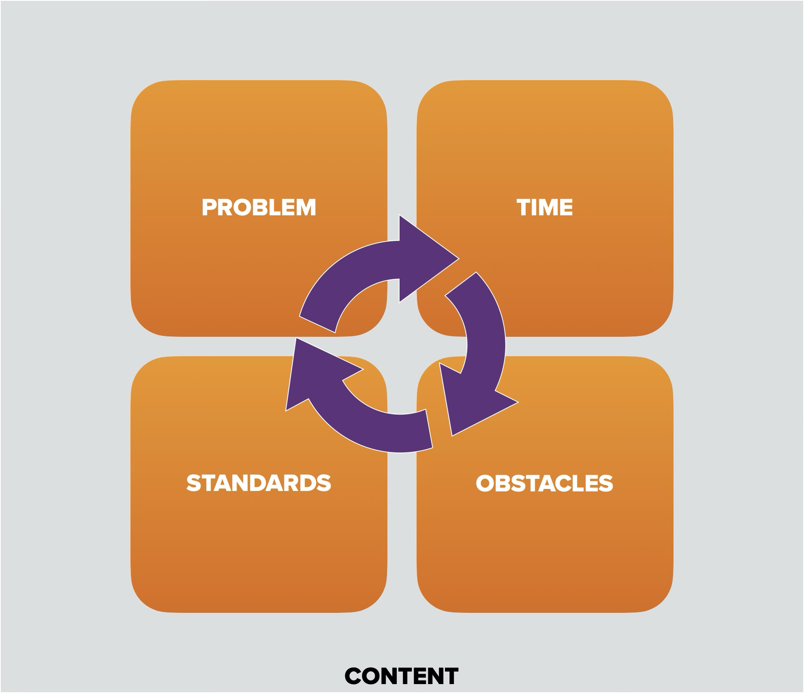

Jethro Jones / Presentations
Jethro Jones
2025-02-14
21 slides
256 words
View as slides
Thoughts about this morning’s presentation?
1
Jethro Jones
Transformative Principal
2
What I do
Three C’s
Coaching
Creating
Clarifying
Mastermind & PQ
Books, Podcasts, Speaking, AILeader
Simple Solutions
3
Creating
4
Clarifying
Stop putting out fires, start leading
5
Which brings us to today
6
How do I Create a Student Choice Project While Incorporating AI?
7
Framework
Tools
Grading
Time
8
9
10
We have to rethink what success in school looks like
11
Old Paradigm
New Paradigm
Test Results
Assessment
Completion
Process
Homework
Real work
Proof
Evidence
Assignments
Events
Due Date
Checkpoints
12
13
Student Driven Learning Design

14
Problem
Process
Presentation
15
What does teaching look like in this new world?
What scares you?
What excites you about this?
16
Tools
Genius Hour
17
What does grading look like?
18
Stop grading assignments, start recognizing “standards”
easier
simpler
faster
binary
evidence
one-point rubrics
19
Questions & Ideas
20
Jethro.site/bishopbrady
21
Close
Previous
1 / 21
Next
Fullscreen